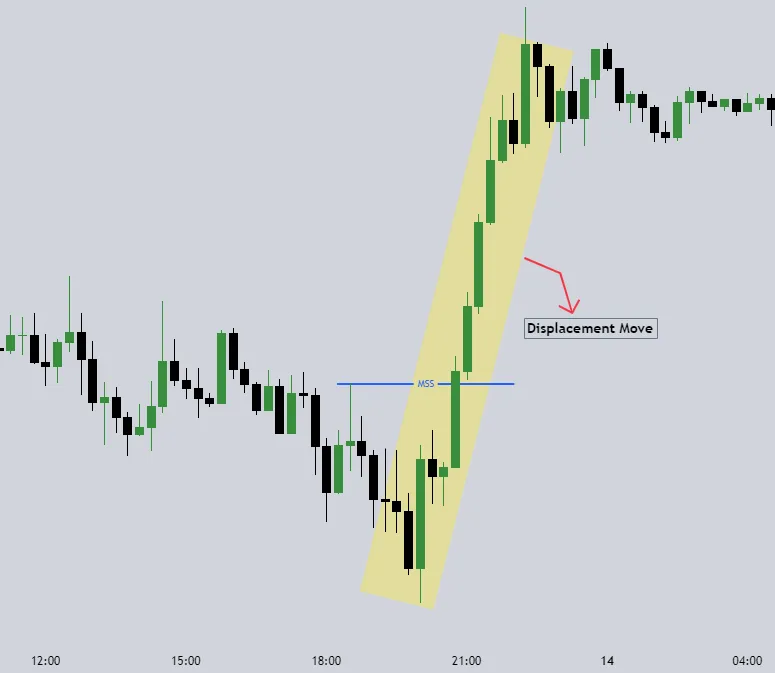

Becoming a consistently profitable trader requires a deep understanding of market behavior and the ability to apply key trading concepts effectively. Order blocks reveal areas where institutions have placed significant buy or sell orders, making them strong points of support or resistance. Learning to spot these levels helps traders align with smart money rather than trading against it.
Liquidity grabs occur when price temporarily spikes beyond key levels to trigger stop losses before reversing—this is how institutions gather liquidity for their actual move. Recognizing these stop hunts can prevent traders from getting trapped in false breakouts and instead position them with the larger trend.
Market structure shifts (MSS) are crucial for identifying when a trend is changing. In an uptrend, higher highs and higher lows confirm strength, but when price breaks below a previous higher low, it signals a potential bearish shift. The same applies in reverse for a bullish reversal. Traders who can correctly identify MSS are better at catching trend changes early and avoiding unnecessary losses.
Fair value gaps (FVGs) represent price inefficiencies caused by strong market movements, leaving gaps that price often revisits before continuing in the original direction. These gaps act as areas of interest for potential trade setups.
To improve your trading, focus on backtesting strategies to see how they perform in different market conditions. Develop a solid risk management plan—never risk too much on a single trade and always use stop losses wisely.
Journaling your trades helps you track mistakes and refine your strategy over time. Most importantly, stay disciplined and patient—the market rewards those who think long-term and stick to their edge without chasing trades or reacting emotionally.
Success in trading is not about winning every trade but about managing risk and making consistent, well-planned decisions.
